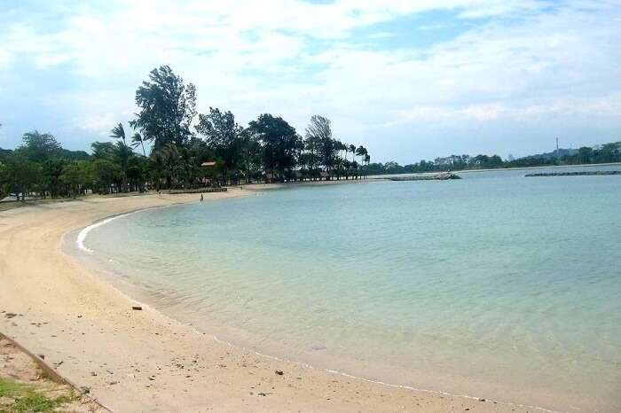
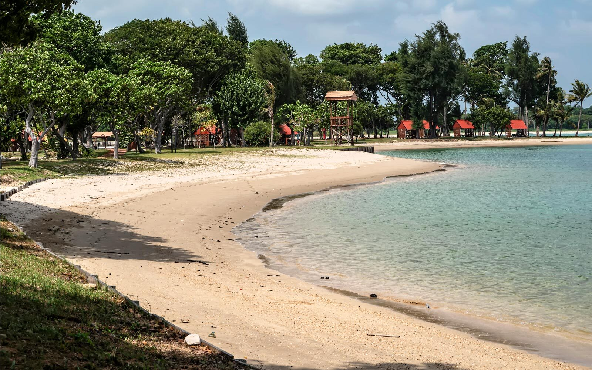
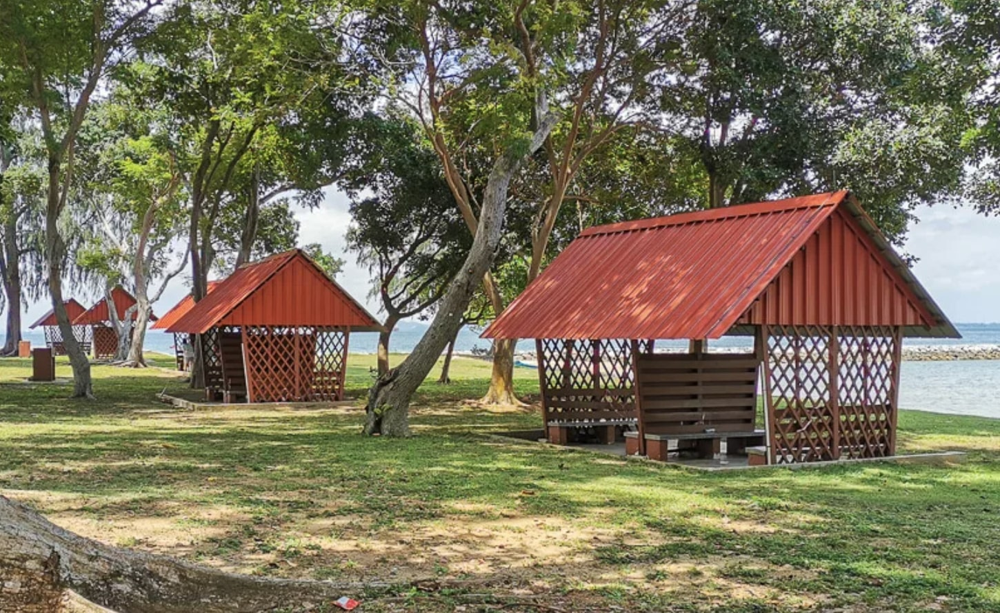
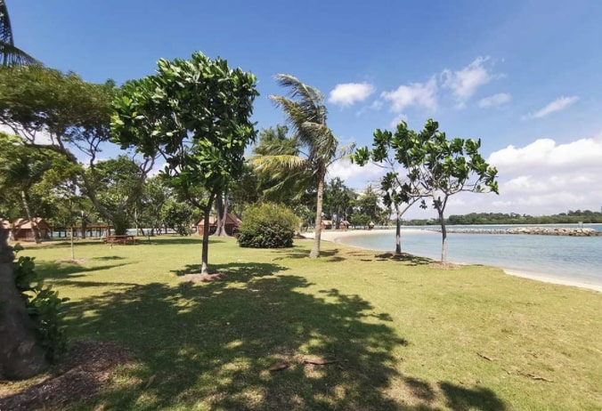

Beaches

There are 2 lagoons where you can swim in Kusu island. The bigger one, which is near Tortoise Sanctuary, is facing Singapore’s mainland.
Meanwhile, the smaller one, which is near Kusu Kramats, is facing Lazarus island. The White Sands, clear waters and green grass patches
are ideal for both land and water activities. Thanks to the marine biodiversity conservation efforts, there are tons of coral reefs, fishes
and other marine life in the waters. There are also many shelter, picnic tables and barbecue pits which are great for get-togethers.
Recommended activities: snorkelling, swimming, BBQ, intertidal tour, picnic.


return to top
return to map